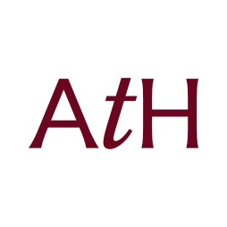
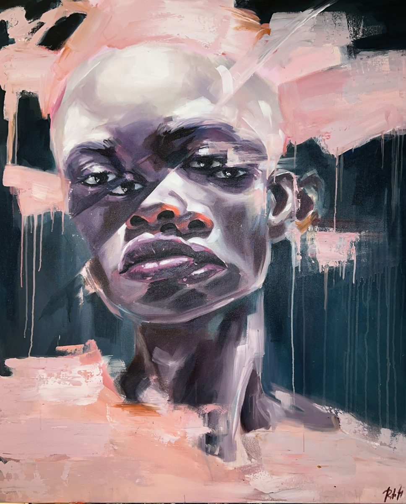
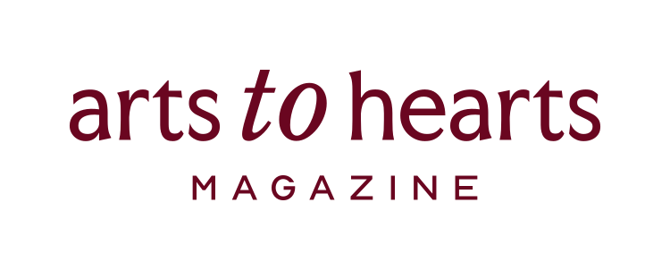
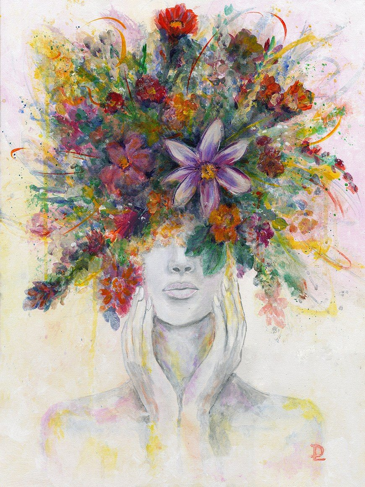
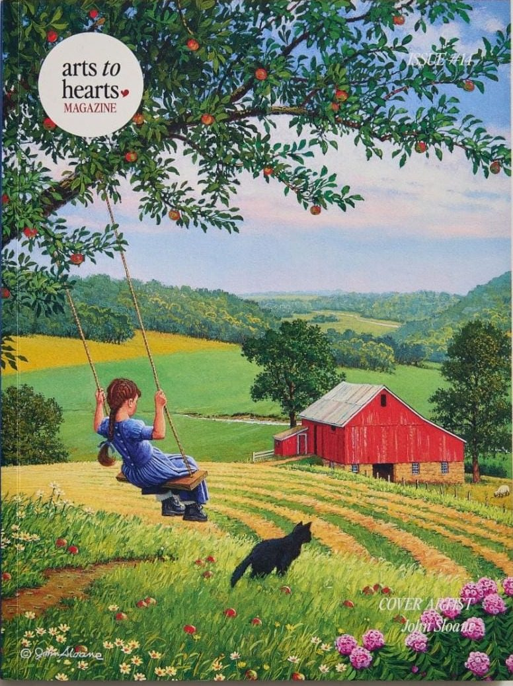
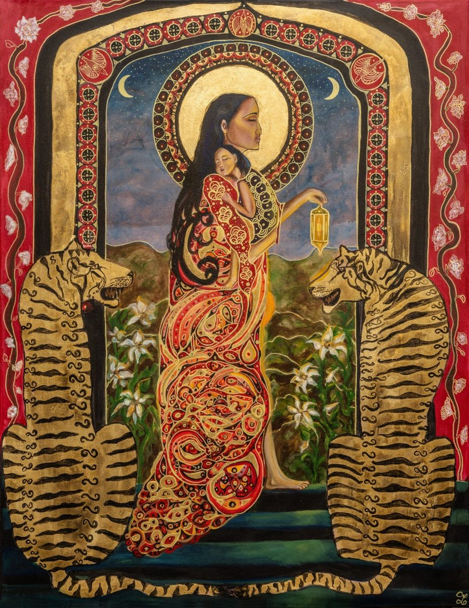
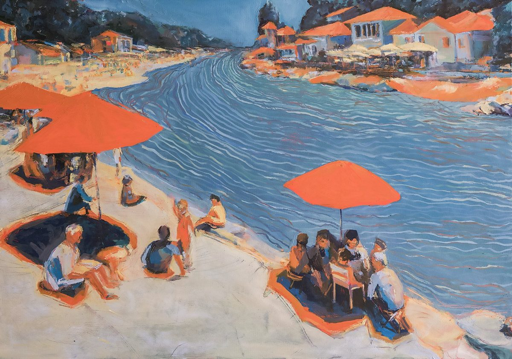

1 · Cover · giant figure + spec label
Open call for artists

Calling all
artists.

16
16 /Issue 16
- Selected:
- 100 artists
- Award:
- $500
- Feature:
- Two pages
- Closes:
- 27 Dec 2026
- Comment:
- ISSUE16

Comment ISSUE16 →
The Arts to Hearts Magazine, Issue 16 launch (10 slides, posting order) built from your five references inside the ATH Social guide. One White surface and one Petrol accent from start to finish, Inter Tight and Libre Baskerville only, the same four corners on every slide, the logo and monogram placed from the brand files. Each reference gives the carousel one device, and each device has its own job in the sequence.
| Ref | Device | Structure | Type move | Colour move | Makes you | ATH translation | Dropped, and why |
|---|---|---|---|---|---|---|---|
| 1, 2 Roasters | Giant letters as the picture + a spec label | Letters fill the page and bleed off the edge; a small label sits over them | Geometric sans at poster size; mono caps LABEL: VALUE rows; "001 /" header | Black on off-white, one periwinkle label | Stop, then read the facts like a product | Giant Inter Tight figures "16" and "100" (520 px, −7%) bleeding off the edge; level Burgundy label, Peony labels, Cream values, Inter Tight Medium caps 22 px tracked +8% | Rotation (nothing tilts in the guide), mono font, the periwinkle (accents are never a background) |
| 2 Roasters | Checkbox options | ■ WHOLE BEAN / □ FILTER in a side column | Small caps beside filled and empty squares | Ink only | See the choice at a glance | Who can apply as Petrol squares: filled = welcome, empty + struck = not eligible (AI work) | Vertical text column |
| 3 Lola Lab | Serif index with superscript numbers | Items run on with slashes; big empty middle; "( name … Service )" footer | Serif at display size, tiny superscripts, big parentheses | Ink on one flat ground | Read the whole offer as one line | What fits (the call's own five kinds) and the past cover artists as Baskerville 56–70 px indexes; Petrol superscripts carry real numbers (issue numbers); footer "( Any … medium )" | Centred setting (guide: left), paper texture |
| 4 Fiverr | Sans sentence with one serif-italic word, underlines, circled numerals, breadcrumb | Big left-set sentences, small footer row | Grotesk + one italic serif word; underlines on key words | Dark green on pale yellow, one colour | Feel spoken to, plainly | Slides 2 and 8: Inter Tight 76 px sentences with one Baskerville italic word and underlines; steps with Petrol circled numerals; breadcrumb becomes the top-left corner "Arts to Hearts Magazine → Issue 16" | Several italic words per paragraph (guide: one italic phrase) |
| 5 Givers | Big serif statement, one contrasting word, small sans paragraph at the bottom | Statement top-left, empty middle, paragraph bottom-left | Serif headline + one script word | Flat ground, the one word in a second colour | Feel the idea before the details | The theme: "The Art of / Starting Again." in Baskerville 72 px, the one word italic in Petrol; the call's own sentence at 32 px bottom-left; the artwork whole beside it | Script face (→ Baskerville italic), green ground (→ White) |
White on all 10 slides. Ink type. Burgundy only as the spec label (Peony labels, Cream values). Petrol is the one accent: superscripts, checkboxes, circled numerals, the one italic word, the keyword in the corner. No Pink, no Chilli, no second accent.
Inter Tight Medium: giant figures 520 px (−7%), cover headline 116 px, slide sentences 76 px, list 46 px, label rows 22–30 px caps, corners 24 px.
Libre Baskerville: theme statement and indexes 56–72 px, one italic word per slide, never in caps. Credits 20 px.
Art and type alternate: 1 cover (art) · 2 the number (type) · 3 theme (art) · 4 what fits (type) · 5 past covers (art) · 6 what you get (type) · 7 artwork in focus (art) · 8 who can apply (type) · 9 how to apply (art) · 10 end card. Slides 6 and 7 swap places from the playbook order so no two type slides touch.
1 · Cover · giant figure + spec label
Open call for artists

Calling all
artists.

16
16 /Issue 16

Comment ISSUE16 →
2 · The number · giant figure + sentence
Arts to Hearts Magazine → Issue 16
Closes 27 Dec
100
artists, published in Issue 16.
One of them wins $500.
Arts to Hearts Magazine, the 4th anniversary issue. Every selected artist gets a two‑page feature.
@artstoheartsproject
Comment ISSUE16 →
3 · The theme · serif statement
Arts to Hearts Magazine → Issue 16
Closes 27 Dec
The Art of
Starting Again.

Debbee Lotito, Bloom, Anyway
Issue 16 is about what comes after an ending. Show us what starting again looks like in your work.
@artstoheartsproject
Comment ISSUE16 →
4 · What fits · serif index
Arts to Hearts Magazine → Issue 16
Closes 27 Dec
Your work fits if it shows
A new chapter01/ A place02/ A memory03/ A change in perspective04/ Work you already made05
( Any
Original work only
No AI-generated work
medium )
@artstoheartsproject
Comment ISSUE16 →
5 · Proof · past cover + index
Arts to Hearts Magazine → Issue 16
Closes 27 Dec

Arts to Hearts Magazine, Issue 14. Cover: John Sloane
John Sloane14/ Troy Brooks13/ Celia Gallego12/ Rachel Deacon11
@artstoheartsproject
Comment ISSUE16 →
6 · What you get · spec label
Arts to Hearts Magazine → Issue 16
Closes 27 Dec
16 /What every selected artist gets
@artstoheartsproject
Comment ISSUE16 →
7 · Artwork in focus
Arts to Hearts Magazine → Issue 16
Closes 27 Dec

Isabella Al-Sharif, Carry Me. Published in Issue 13
@artstoheartsproject
Comment ISSUE16 →
8 · Who can apply · sentence + checkboxes
Arts to Hearts Magazine → Issue 16
Closes 27 Dec
Open to emerging and established artists of all genders, nationalities and backgrounds, at any stage.
Any medium, anywhere
Work you already made
No publication history needed
AI-generated work
@artstoheartsproject
Comment ISSUE16 →
9 · How to apply · circled steps
Arts to Hearts Magazine → Issue 16
Closes 27 Dec

Alyona Zavidina, Where We Sat. Published in Issue 13
1Comment ISSUE16
2We send you the link
3Submit by 27 December
@artstoheartsproject
Comment ISSUE16 →
10 · End card · keyword as giant word
Comment
ISSUE16
and we’ll send you the link.
Closes 27 December 2026